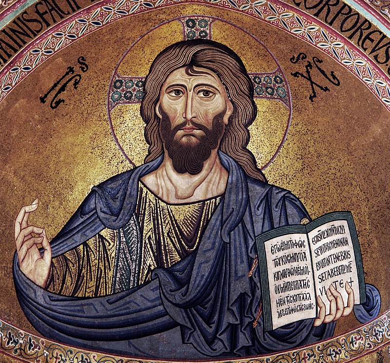

พระเยซู
พระเยซู (อังกฤษ: Jesus) หรือ เยซูชาวนาซาเร็ธ (อังกฤษ: Jesus of Nazareth; 4-2 ปีก่อนคริสตกาล - ค.ศ. 30-33[7]) เป็นชาวยิวผู้เป็นศาสดาของศาสนาคริสต์ คริสต์ศาสนิกชนเรียกพระองค์ว่า พระเยซูคริสต์ เพราะถือว่าพระองค์เป็นพระคริสต์ พระผู้ช่วยให้รอด เป็นพระบุตรพระเป็นเจ้า และเป็นพระเจ้าพระบุตรซึ่งเป็นพระบุคคลหนึ่งในพระตรีเอกภาพ นอกจากนี้ในคัมภีร์ไบเบิลยังบันทึกว่าพระเยซูทรงแสดงปาฏิหาริย์ทรงรักษาคนตาบอดให้หายขาด รักษาคนพิการ โดยตรัสว่า บาปของเจ้าได้รับการให้อภัยแล้ว หลังพระเยซูสิ้นพระชนม์ ก็ได้ทรงฟื้นขึ้นจากความตายหลังสิ้นพระชนม์ได้เพียง 3 วัน และเสด็จขึ้นสู่สวรรค์
ชาวมุสลิมก็ให้ความเคารพพระเยซูเช่นกัน แต่เชื่อต่างจากชาวคริสต์ โดยชาวมุสลิมเรียกพระเยซูว่านบีอีซา คัมภีร์อัลกุรอานระบุว่าพระเยซูไม่ใช่ทั้งพระเจ้าและพระบุตรของพระเจ้า[8] แต่เป็นบ่าวคนหนึ่งของพระเจ้า[9] และเป็นเราะซูลที่พระเจ้าส่งมาเป็นแบบอย่างทางศีลธรรมให้แก่ชาวอิสราเอล[10]เช่นเดียวกับเราะซูลอื่น ๆ นอกจากนี้กุรอานยังอ้างว่าพระเยซูได้ทำนายถึงเราะซูลอีกท่านหนึ่งที่จะมาในอนาคตด้วยว่าชื่ออะหมัด[11]
คำว่า "เยซู" มาจากคำในภาษากรีกคือ "เยซุส" Ιησους [Iēsoûs] ซึ่งมาจากการถ่ายอักษรชื่อ Yeshua [เยชูวา] ในภาษาแอราเมอิกหรือฮีบรูอีกทอดหนึ่ง คริสตชนอาหรับเรียกเยซูว่า "ยาซูอฺ" ตามภาษาซีรีแอก ส่วนชาวอาหรับมุสลิมเรียกว่า "อีซา" ตามอัลกุรอาน ความหมายคือ "ผู้ช่วยให้รอด" เป็นชื่อที่ใช้กันมากในหมู่ชาวยิวตั้งแต่สมัยโยชูวาเป็นต้นมา ภาษาละตินแผลงเป็นเยซูส ภาษาโปรตุเกสแผลงต่อเป็นเยซู ภาษาไทยทับศัพท์ภาษาโปรตุเกสมาจนทุกวันนี้ ส่วนคำว่า "คริสต์" เป็นสมญาซึ่งมาจากคำในภาษากรีกว่า "คริสตอส" Χριστός [Christos] ซึ่งเป็นคำแปลของคำภาษาฮีบรู Messiah อันหมายถึง "ผู้ได้รับการเจิม" ชาวอาหรับเรียกว่า "มะซีฮฺ" ซึ่งหมายถึงการแต่งตั้งให้ทำหน้าที่สูงส่ง เช่น พระมหากษัตริย์ ปุโรหิต ผู้เผยพระวจนะ เป็นต้น